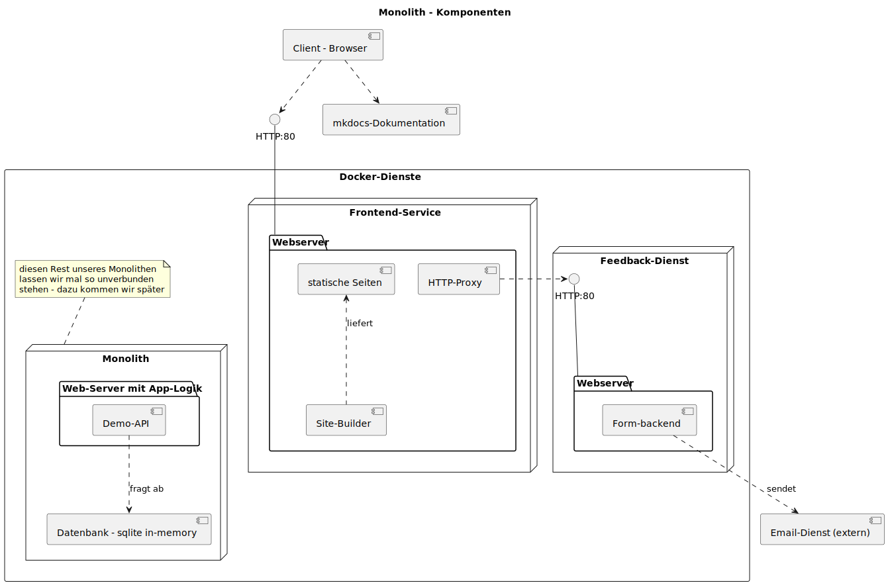
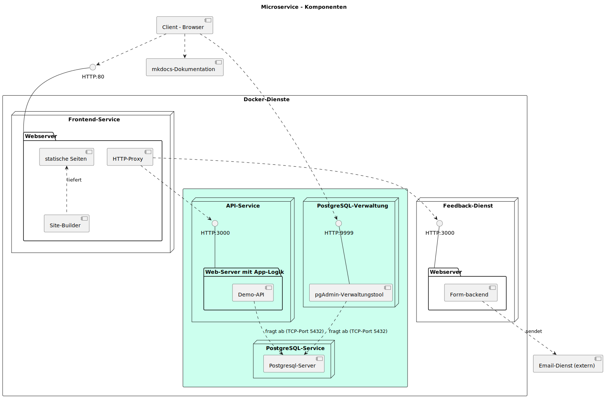
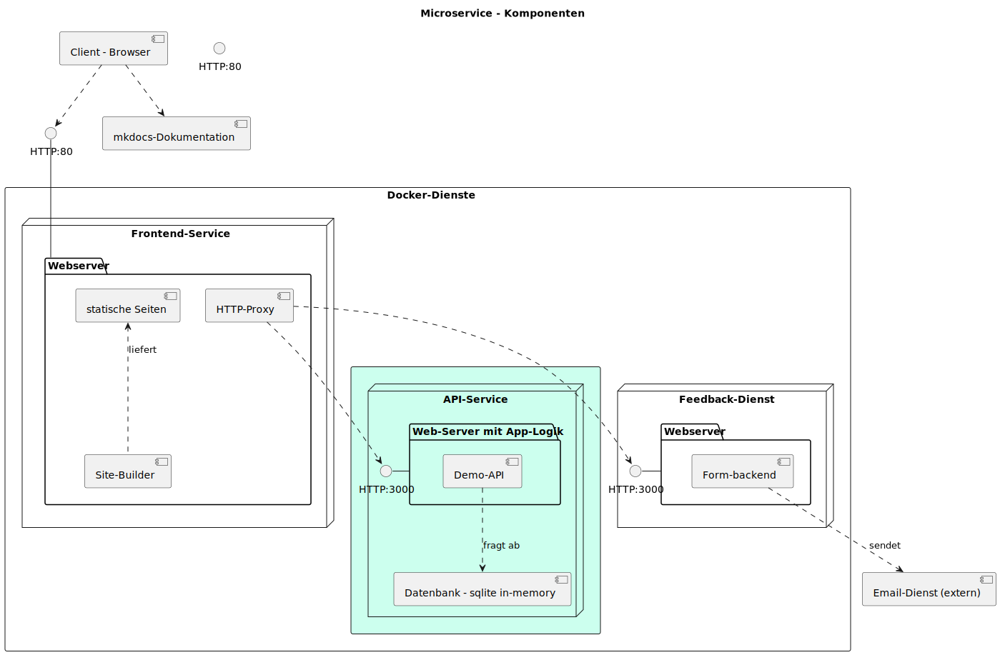

{% extends "../_base_template.html" %}
{% block title %}Lektion 7 - Networks, Volumes{% endblock %}

{% block sections %}
<section data-markdown>
<textarea data-template>
# <i class="fas fa-graduation-cap"></i> M347 - Dienste verbinden - Networking, Volumes

## Heutiges Ziel

- Sie kennen das **Networking**-Konzept in Docker und können Dienste via Netzwerk miteinander verbinden
- Sie kennen das **Volumes**-Konzept in Docker und können Daten persistent für Container zur Verfügung stellen
- Sie haben den API-Backend-Dienst vom Monolithen in einen eigenen Container / Dienst "verpackt"
- Der API-Dienst speichert / liest die Daten von einem (persistenten) PostgreSQL-Datenbank-Dienst

Dafür nehmen wir uns 2 Lektionen Zeit, da dies recht viel Stoff beinhaltet.
</textarea>
</section>


<!-- ----------------------------------------------------------------------------- -->
<section>
<section data-markdown>
<textarea data-template>
# <i class="fas fa-graduation-cap"></i> Auf dem Weg zur Microservice-Architektur

Was haben wir bis jetzt erreicht?

<div style="display: flex; gap:10px">
  
  <div style="flex-grow: 1;">

* Wir haben bereits folgende Dienste von unserem Monolithen extrahiert:
    * **Frontend**, welches unsere statische Webseite liefert
    * **Feedback-Service**, welcher die Formulardaten vom Frontend entgegennimmt und via Mail verschickt
* noch offen ist der API-Dienst, welcher in unserem Demo kleine Texte speichert / ausliefert
  </div>
</div>

</textarea>
</section>
<section data-markdown>
<textarea data-template>
# <i class="fas fa-graduation-cap"></i> Auf dem Weg zur Microservice-Architektur

Wir gehen nun den letzten Schritt, und lösen den letzten Dienst von unserem Monolithen: Den **API-Dienst**, welcher bis
anhin die Routen **`/api/save-text`** und **`/api/get-texts`** zur Verfügung gestellt hat. Unsere Ziel-Architektur sieht so aus:

<div style="display: flex; gap:10px">
  
  <div style="flex-grow: 1;">

Der Umbau beinhaltet 2 Schritte:

1. Unsere API erhält einen **eigenen Dienst / Container** (der letzte Schritt unserer Extraktion)
2. Wir speichern die Daten (Texte) in **einer eigenen, richtigen PostgreSQL-Datenbank**, anstatt
   in einem In-Memory-Container
  </div>
</div>


</textarea>
</section>
</section>

<!-- -----------------------------------------------------------------  -->
<section data-markdown>
<textarea data-template>
# <i class="fas fa-flask"></i> Umbau - API-Dienst als eigener Container

## Aufgabe

Extrahieren Sie den Teil des Monolithen, der die Routen **`/api/save-text`** und **`/api/get-texts`** abhandelt, in einen eigenen Docker-Dienst (Container).
Ziel ist die Implementation der Architektur auf der vorhergehenden Folie, noch ohne die Datenbank.

## Vorgehen

1. Erstellen Sie einen eigenen Ordner mit einem Dockerfile für den neuen Dienst.
1. Analysieren Sie im File **`monolith/server.js`**, welche Code-Teile Sie für den API-Dienst benötigen.
1. Erstellen Sie dann ein neues `server.js` und zugehörige, notwendige Files (z.B. package.json) im neuen Dienst-Verzeichnis
1. Erstellen Sie ein Docker-File und damit einen eigenen Container, und bringen Sie den API-Dienst darin zum Laufen.
1. Passen Sie den **`frontend`**-Code an, sodass dieser den neuen API-Container "bedient".
1. Achten Sie darauf, dass die Container miteinander kommunizieren können, wo/wenn nötig: Konfigurieren Sie die korrekte Netzwerk-Verbindungen!

## Zeit, Umsetzung

Sie haben nun während dieser Lektion Zeit, dies umzusetzen. Sie dürfen dies gerne auch **zusammen** angehen, diskutieren, helfen!

Gegen Ende der Lektion tragen wir zusammen, wo Sie stehen, und führen ev. gewisse Schritte noch zusammen durch.
</textarea>
</section>

<!-- -----------------------------------------------------------------  -->
<section data-markdown>
<textarea data-template>
# <i class="fas fa-flask"></i> Umbau - Was haben wir erreicht?

Die nun umgesetzte Architektur sieht folgendermassen aus:

<div class="d-flex gap-10">
  
  <div>
    <br />
    
* Unser Monolith ist nun aufgetrennt in die 3 Services
  * Frontend
  * Feedback
  * API-Service<br />
  aufgetrennt
* **Der Monolith ist somit komplett in Micro-Services überführt! <i class="far fa-smile"></i>**
* Es fehlt noch eine persistente Datenbank für unsere Textsammlung (API).
  </div>
</div>
</textarea>
</section>


{% endblock %}
